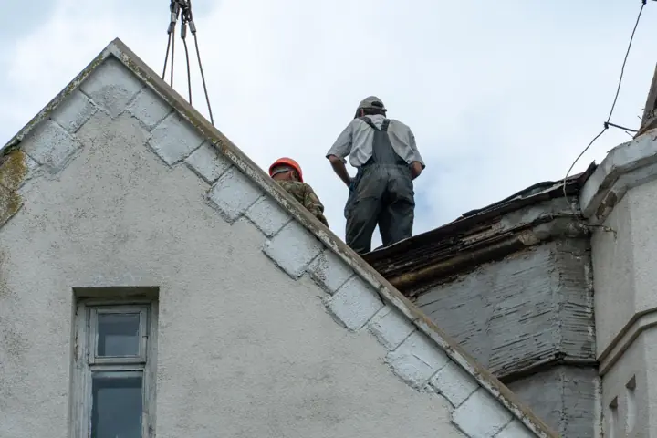
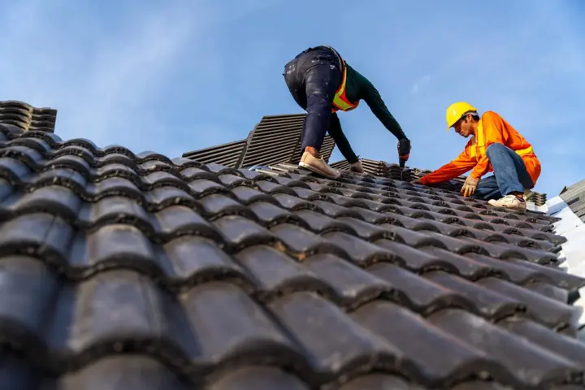
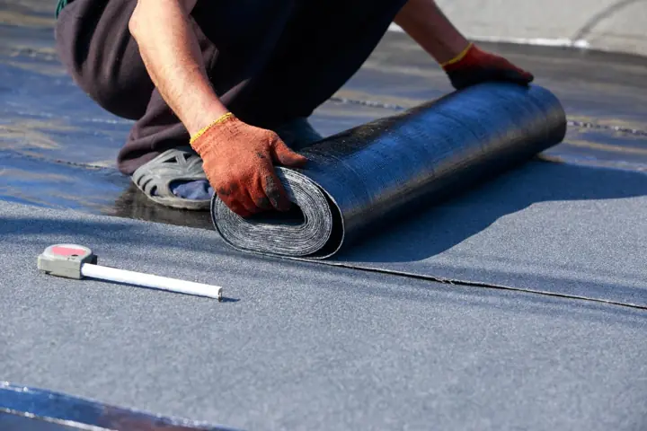
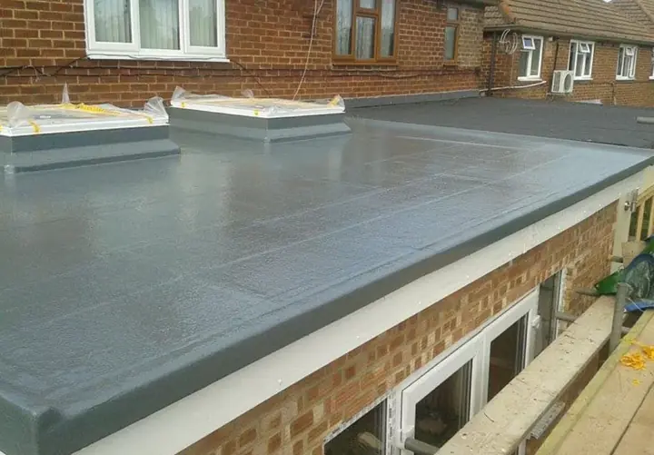
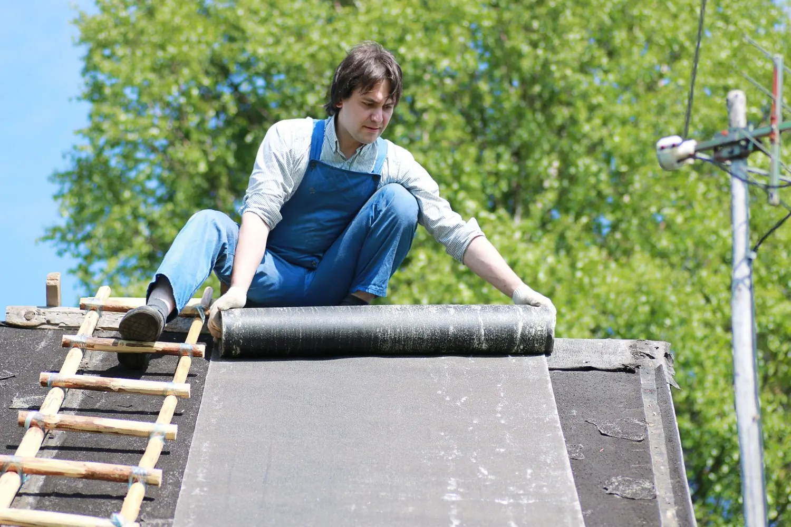

Roofing · Repairs · Renovation
Expert roofers in Dublin. Built to last.
Looking for reliable roofers in Dublin? Roofers 365 provides professional roof repairs, roof replacements and new roof installations, with quality workmanship and dependable service for homes and businesses.
- Free, no-obligation quotes
- Residential & commercial
- Repairs to full replacements
- Dublin, Kildare, Meath & Louth
Your trusted roofing specialists in Dublin.
Roofers 365 helps homeowners and businesses protect their properties with reliable roofing, from roof repairs and leak detection to complete roof replacements and new roof installations.
We focus on quality workmanship, durable materials and dependable customer service. Whether you need to repair a damaged roof or plan a complete roofing upgrade, our team will help you find the right solution for your property and budget.
- Roof repairs & leak detection
- Roof replacements
- Residential & commercial roofing
- Free roofing quotes
Every roofing job, one trusted team.

01Roof Repairs
Leaks, broken tiles, damaged slates and loose flashing fixed properly.
View service 02
02
Roof Replacement
Complete re-roofs and new roofs built to handle Irish weather.
View serviceTiled Roofs
Concrete and clay tile roofs installed, repaired and maintained.
View service
04Slate Roofs
Natural and fibre-cement slate fitted and repaired with care.
View service 05
05
Flat Roofs
Watertight flat roofs for extensions, garages and dormers.
View serviceFelt Roofing
Torch-on felt systems for tough, long-lasting flat roofs.
View service
07Rubber Roofing
EPDM rubber roofs: seamless, flexible and low-maintenance.
View service
08Fibreglass Roofing
GRP fibreglass flat roofs with a smooth, seamless finish.
View serviceReliable roofing contractors you can trust.
Professional roofing services in Dublin, including roof repairs, replacements, new roof installations and maintenance.
Experienced roofing specialists
Professional roofing for homes and commercial buildings in Dublin, with a focus on quality workmanship and reliable results.
Fast roof repair solutions
Leaking roofs, damaged tiles and other common roofing problems sorted with practical repairs tailored to your property.
Roof replacement & installation
Roof replacements and new roof installations designed around your building’s requirements.
Complete roofing services
From inspections and routine maintenance to repairs and replacements, one team for every roofing need.
Residential & commercial
Roofing for houses, rental properties and commercial buildings, based on the scope and condition of each roof.
Free roofing quotes
Talk to us about your project, explain what you need and get a quote before any work begins.

Quality roofing built for safety and durability.
From roof inspections and leak repairs to replacements and new installations, we follow a practical approach focused on quality workmanship, suitable materials and your roofing requirements.
Thorough roof inspections
We find the real cause of the problem before recommending anything.
Quality roofing materials
Materials chosen to suit your roof and stand up to Irish weather.
Safe, professional workmanship
Work carried out safely, neatly and to a high standard.
Reliable roofing solutions
Repairs and roofs built to protect your property for years.
Roofing in action.
Tap a photo to see it full size.
What our customers say.
“The team helped address our roofing concerns and explained the repair work clearly. Communication throughout the job was helpful and professional.”
“We needed help with a roof leak and wanted to understand the available repair options. The team explained the next steps clearly.”
“We were considering replacing our old roof and needed clear information about the work involved. The team helped us understand our options.”
Dublin, Kildare, Meath & Louth.
Do we cover your area?
Everything you need to know.
How do I know if my roof needs repair or replacement?
Common signs include roof leaks, missing or damaged tiles, damp patches and visible roof deterioration. A professional roof inspection shows whether a repair is enough or a complete roof replacement is needed.
How much does roof repair or replacement cost in Dublin?
It depends on the roof size, materials, extent of damage and how complex the work is. Contact Roofers 365 to discuss your roof and request a free quote tailored to your property.
Do you provide emergency roof repair services in Dublin?
Yes. If your roof has been damaged by strong winds, heavy rain or a sudden leak, call us on 087 393 8096 to discuss the problem and the quickest way to make it safe.
What roofing services does Roofers 365 provide?
Roof repairs, roof replacements and new roofs, tiled and slate roofs, flat roofs in felt, rubber and fibreglass, leadwork, chimney repairs, roof cleaning, guttering, fascias and soffits.
How long does a roof repair or replacement take?
It depends on the roof size, type of repair, weather and material availability. Minor repairs can be quick, while a full roof replacement can take several days or longer. We give you a timeframe with your quote.
Need a roofer? Get a free quote.
Roof repairs, replacements, flat roofs, chimneys and guttering across Dublin, Kildare, Meath and Louth. Talk to Roofers 365 today.